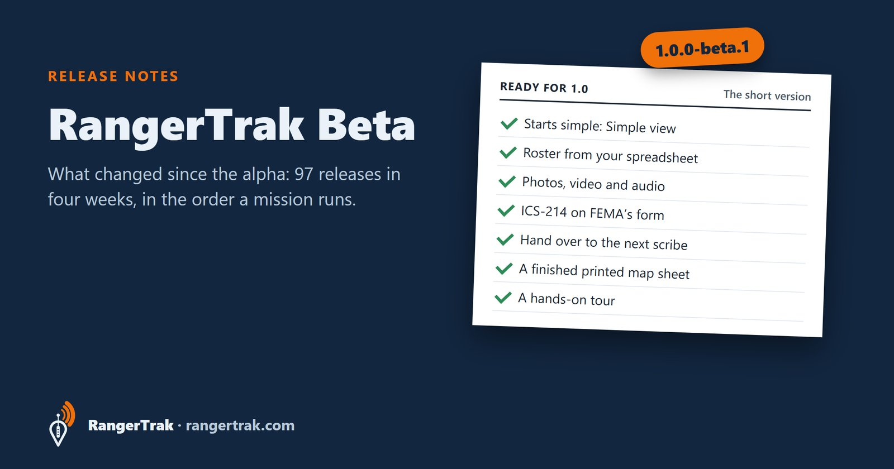
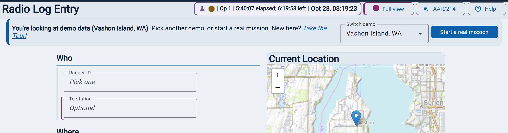
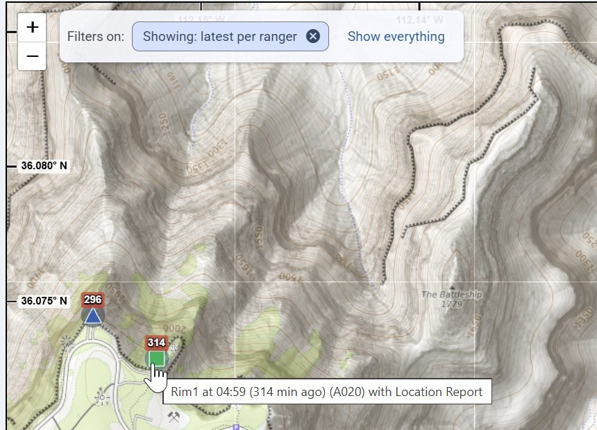
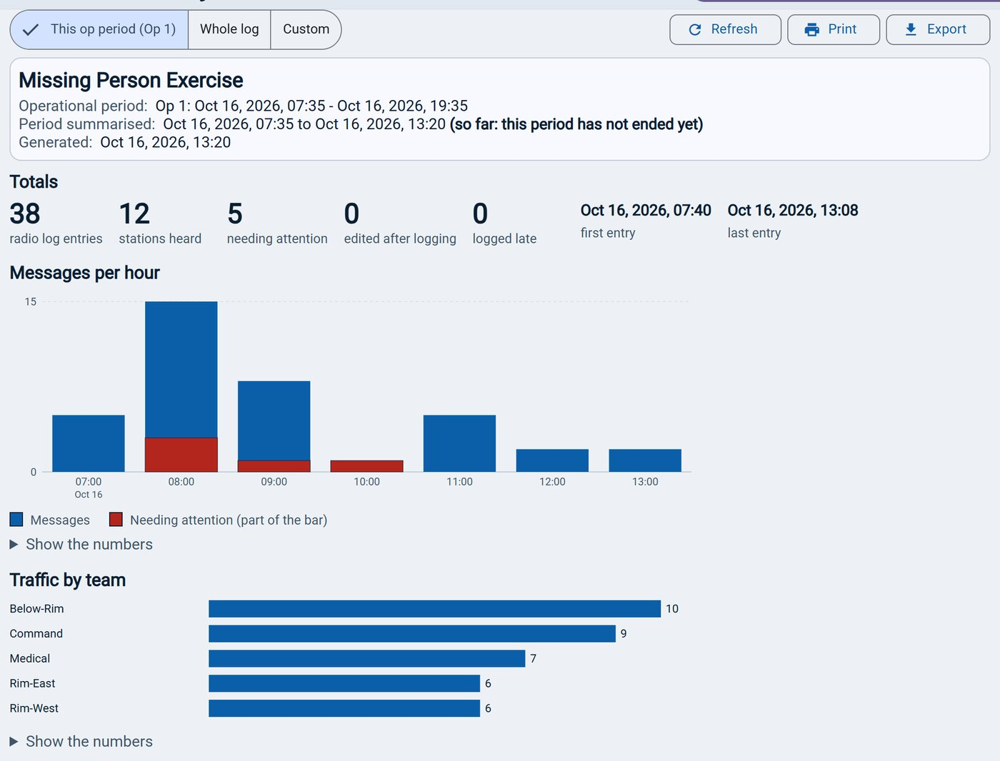

Release notes
RangerTrak Beta: What Changed Since the Alpha

RangerTrak is a free, open-source radio log and map for the scribe at a CERT, ACS/ARES, SAR or wildland-fire command post. Log who, where, when and what off the radio; it maps them. It works offline once set up, and prints the Form 309 Communications Log, ICS-213 and ICS-214. I built it. It’s AGPL and will stay free. Try it at rangertrak.org, no account or install needed, and take the tour to learn it.
The alpha went out on September 29. Today RangerTrak is in beta, version 1.0.0-beta.1. Here’s what that means: everything planned for 1.0 is in, and from here until 1.0 the changes are fixes. It’s ready to try in a drill. It isn’t yet ready for a real call-out, and until it is, keep the paper log beside it. 1.0 is planned for November, after an upcoming exercise.
Four weeks is a short alpha, but the people who tried it were generous with what they found. A lot changed because of them: there have been 97 releases since the alpha. This is the whole list, in the order a mission runs.
The short version
- It starts simple. A new install shows the everyday controls and nothing else.
- Your roster comes from your spreadsheet, not from retyping.
- Photos, video and audio can go with a report.
- The ICS-214 joins the 309 and 213, on FEMA’s own form.
- Hand over to the next scribe in one file, without losing anyone’s entries.
- The printed map sheet is finished enough to go in the packet.
- A hands-on tour teaches the app one module at a time. Start it here.
It starts simple


The alpha showed you everything at once: tactical call signs, three coordinate pickers, the alternative map, encryption settings. Testers told me, politely, that a new scribe didn’t know where to look. So a new install now opens in Simple view: log the report, watch the map, print the 309. That’s the job, and on a first drill it’s enough.
Everything else is one button away. Full view, at the top of Entry, Map, Mission and Rangers & Teams, shows the rest, each extra marked with a thin plum edge. It’s per device, so the command-post laptop can show everything while a newcomer’s phone stays simple. And Simple view never hides your data: once a mission uses something, such as a tactical call or an attached photo, it shows in both views. The extras are on the site’s new Full view page. Every one is free; Full view is not a paid tier.
Before the mission
- Import your roster from Excel or CSV. RangerTrak guesses what each column is, shows a preview, adds by default and never deletes without asking. It won’t store home or e-mail addresses. Part 7 covers it in full.
- Replace roster now names the people it would remove, with counts, and in a live mission asks you to type REPLACE.
- Undo last import. Restoring a backup, merging a field phone’s packet, loading a Setup file or importing a roster (Add or Replace) each takes a safety copy first. Loaded the wrong one? Undo puts it back, and warns you if entries were logged since. Undoing a roster import puts back the roster, its layers and photos, and never touches the log. Restore also shows a preview first, with Cancel ready.
- Places load from a spreadsheet, a Google My Maps export or GeoJSON, and a named import becomes a layer you can refresh later.
- Two demo missions modeled on real events: the 2018 Montecito debris flows and the 2014 SR 530 landslide near Oso, each with hundreds of reports and dozens of teams. The people are made up; the scale and the problems follow the public record. Each links to a historical record of the incident, for context.
Logging a report
- Tactical calls, From and To station: “Rim Team 1 (K7ABC)” on the log and the 309.
- Ctrl+Enter logs an entry. Phones no longer pop the keyboard up on their own.
- One set of coordinate formats everywhere: decimal degrees, degrees and minutes, DMS, USNG/MGRS and UTM, the same on Entry, Map and places.
- Photos, video and audio. Attach adds files to a report; on a phone it opens the camera. The original is kept exactly, with a fingerprint that proves a copy is identical. Smaller copy sends faster. Device encryption covers them too.
Watching the mission


- New maps: satellite, USGS aerial photos and shaded relief (both savable for offline use, US only), a USNG grid, range rings around the command post, and hiking trails.
- Map filters hide places, entries or trails, or show only the latest per ranger. A chip says a filter is on, so nobody mistakes a filtered map for the whole picture.
- Trails show direction, thin to thick toward the latest position.
On paper

- The printed map sheet: a title box, the map filling the page, a north arrow and scale, and a legend that doubles as a roll call, with every team and how many entries each has.
- EXERCISE across every printout when the mission is an exercise or a demo.
- The 213 prints enough copies for every recipient, including one or more for documentation.
More than one device
- Field phones file their own reports, with photos, and send them in as a Report Packet. The command post merges it; sending twice does no harm.
- The RangerTrak Board is one of the most exciting new features: a secure, read-only, mini command-post Wi-Fi web server. Authorized users around the command post see each radio log entry the moment it’s logged, and the ICS-213 messages too.
- Board trouble says what’s wrong. Test connection names the likely cause. The Board laptop checks itself at start and changes a Windows setting only after asking. A viewer that loses the Board says so, with the time (“Lost the Board at 12:04…”), instead of quietly going stale.
Shift change


- The Mission summary: messages per hour, traffic by team, what needs attention. Print it for the briefing.
- Hand over to another scribe: one file with the people, the places and every entry. The other device merges it in, keeps both scribes’ entries and carries corrections. Merging twice adds nothing. Part 8 walks through a shift change.
After the mission

- The ICS-214 activity log. The button at the top of every page now reads AAR/214. One line, as an AAR note or as a 214 line with a time you can change. On the After Action page, Export ICS-214 fills in FEMA’s fillable form, offline. 214 lines are your own unit log, not radio traffic, so they stay off the 309 and the map.
- AAR notes flow into the summary, grouped by area, and print as an improvement-plan table.
- A mission journal (Log > Journal) records what was done to the mission’s data on this device: backups, restores, imports, exports, prints, anything cleared. Events, not contents: never what was said on the radio. Each entry is chained to the one before, the tab says whether the chain is intact, and the newest entry’s short code is printed at the foot of the 309, the summary and the map sheet, so the paper and the laptop can be checked against each other later.
- What to clear after a mission is one dialog: the log and its attachments go together, notes and 214 lines stay unless you tick them, and it offers a backup first.
- Export roster for the final report, then clear the device.
Also
It loads faster (the first download went from 2.10 to 1.75 MB). Buttons are bigger. An update waits quietly during a live mission instead of interrupting it. And there were many bug fixes; the changelog has every one.
Every automated test passes in the beta:
| Tests | Passing |
|---|---|
| Unit tests | 1379 / 1379 |
| Board tests | 77 / 77 |
| Default e2e | 728 / 728 |
Thank you
To the volunteers of Vashon ACS, who have backed and tested RangerTrak, drill after drill, over the long life of this project: thank you. And to Kevin Mitcham, Michael Meyer and Susan, who tested it hardest and told me what they found. Much of this list is theirs.
What’s next
That’s a lot of new features in four weeks, more than I’ve been able to test completely. Each one works on its own, but not every combination has been tried: every kind of device, every view, every import and merge, in every order a real mission might run them. That’s the work of the next few weeks, and I’d welcome your help with it. The tour below is the place to start.
From here to 1.0 it’s fixes: whatever you find, plus the Board on real devices and an upcoming exercise. 1.0 promises that backups made from then on restore in every later version. I’m not promising dates for anything after that, and there’s already been a request for an international version!
Take the tour
The best way in: Take the RangerTrak Tour, nine hands-on modules, each a few short tests you try in the app yourself. Modules 1 to 3 explore the built-in demo. In 4 to 7 you set up and run a small exercise of your own, from the first radio call to the after-action notes. Module 5, Run the net, is best done with your team. 8 and 9 are the optional extras: the Board and field phones. Back up any real radio reports before starting!
Each test has a number, such as T3.4. When something is wrong, odd or slow, write the number down with one line about it. That’s the whole feedback form. Prefer paper? Print the Tour Checklist.
Tell me
- What would stop you using it at your next drill?
- Did Simple view hide something you needed?
Use the feedback form (start with “Beta”), Help → Contact us inside the app, reply on LinkedIn, or email RangerTrak [at] steadyeoc [dot] com.
Next in Field Notes: Part 9, After the Mission: the debrief, the ICS-214 and the final report.
The next release: RangerTrak Beta 2: What’s New.